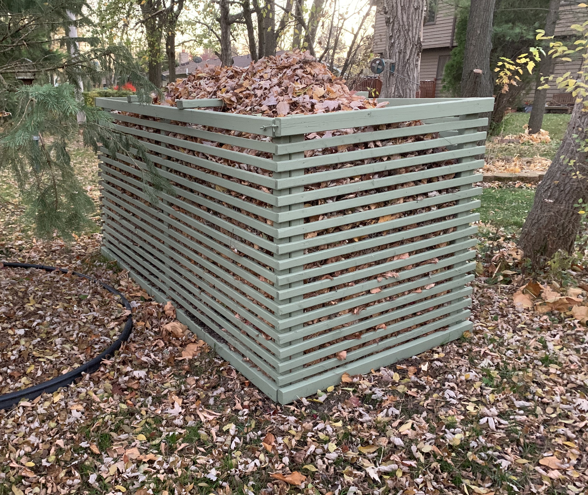
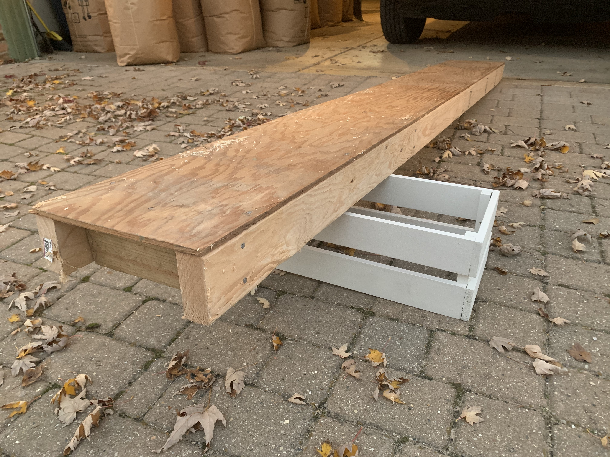
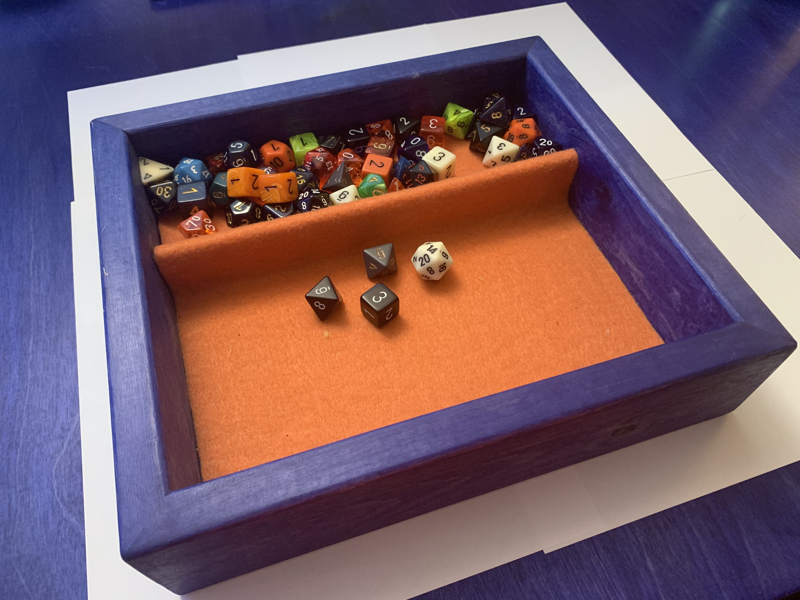
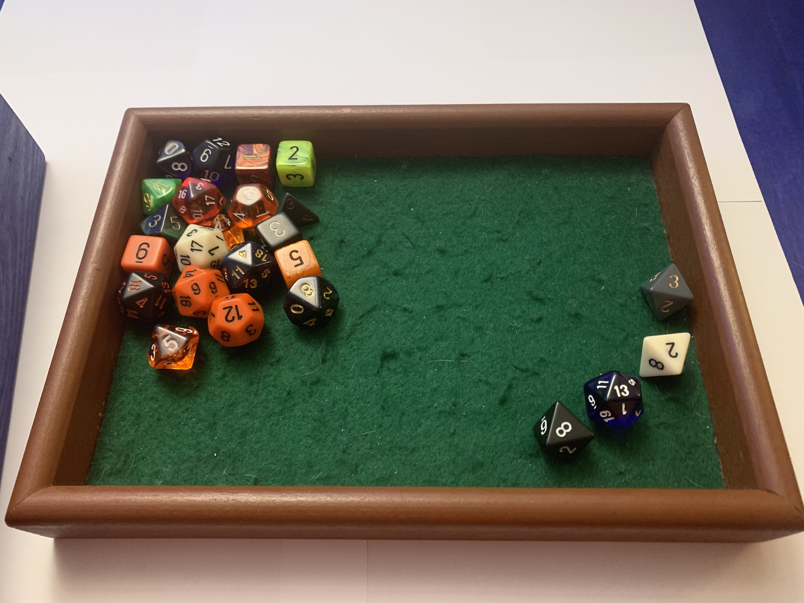

Making things from wood
My dad gave me my first hammer when I was probably 8 or 9 years old. He pointed to the scrap bin and a coffee can of nails and said something like “You can use any wood in of that pile and the nails in this can.” My dad has been a carpenter his whole life, really since he was a kid. I pounded most of the nails from that coffee can into those wood scraps all summer. Eventually you develop an understanding with a hammer, any tool really, and learn how to use it effectively. Everyone should have some time hammering nails when they’re a kid. Since then I’ve continued to develop some modest carpentry skills and continue to make projects with a hammer and nails.
Compost bin
Our yard has a lot of big trees around it and we get a lot of leaves in the fall. Partly to minimize the amount of compostable material that needs to be hauled away and partly out of curiosity, I built a 4ft x 8ft compost bin last summer. I built a frame out of 2” x 3”s and used 1in. x 2in. lumber for the slats. I mulled over the plans for several weeks, but when I finally committed, I was able to get the materials and build over a weekend.
Work bench
This is the first and smallest of three work benches I am planning for my garage. In the end it will function probably be used mostly as a step stool, but for now it provides some solid, clampable workspace without taking up too much room. The blue stain used is the same as the dice tray described later on this page.
Ladder plank
This plank was put together with an old scrap of plywood from the garage, inherited from the original owners of our house. I used new 2” x 4” lumber for the frame. I built this plank to be able to paint the walls over an open stairwell. Since then I have used it to help me paint the outside of my house. Most of the time it lives in the garage under the car.
Dice tray
I had a vision for a dice rolling tray that had two tiers. I couldn't find one I liked so I made one. It's a little big and kind of heavy, but it was a fun project. Since then I made some smaller, lighter weight trays. They were all made with scrap wood, finished with water-based stain and lined with felt from the craft store.
 